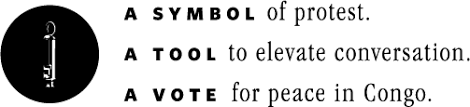

The whistle is not just an ordinary whistle. The Falling Whistle is a way to help and rebuild war torn communities in the Congo.
Child soldiers are still a huge problem in the Congo, and the whistles are a way to help stop the children in the Congo from suffering, and giving them opportunities.
